The remodel, built from a 3D scan of the room at real size and lit by the real sun. Switch between fall and winter, and scroll through the whole room at three times of day.
The sun is in the southeast, so it comes in through the east windows under the mini split.
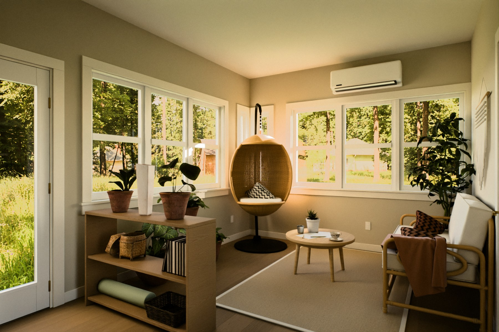
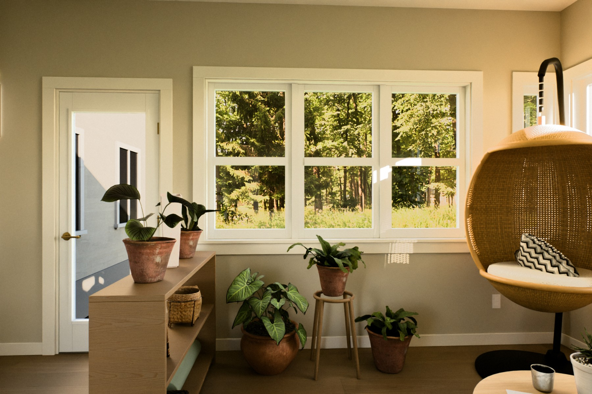
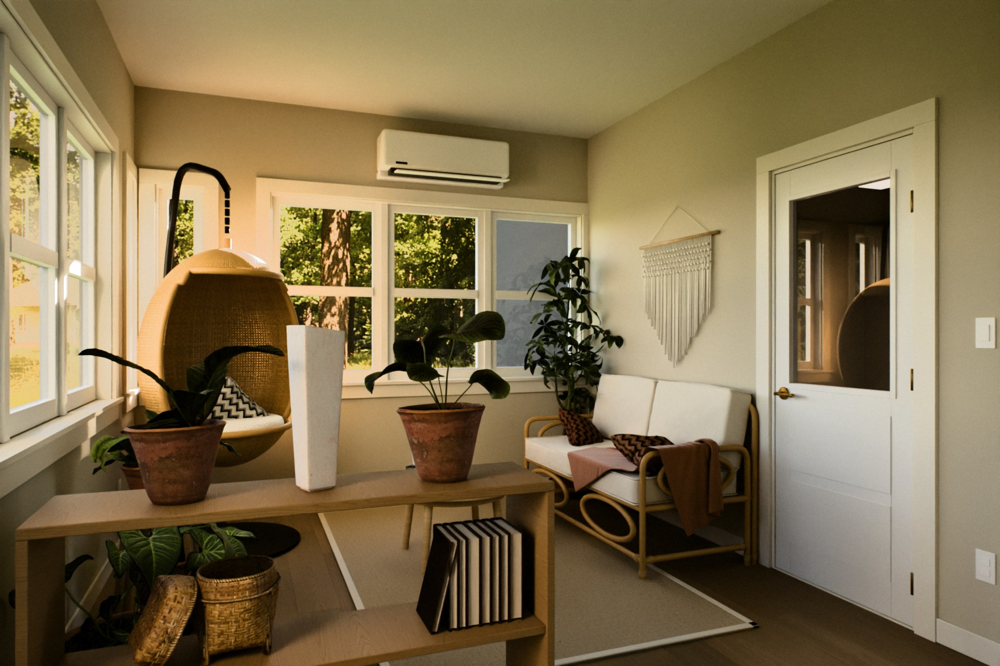
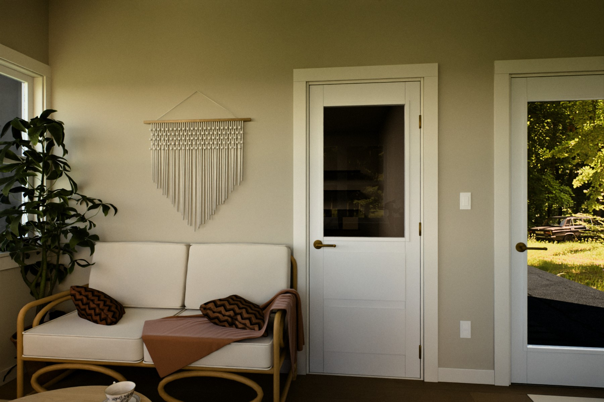
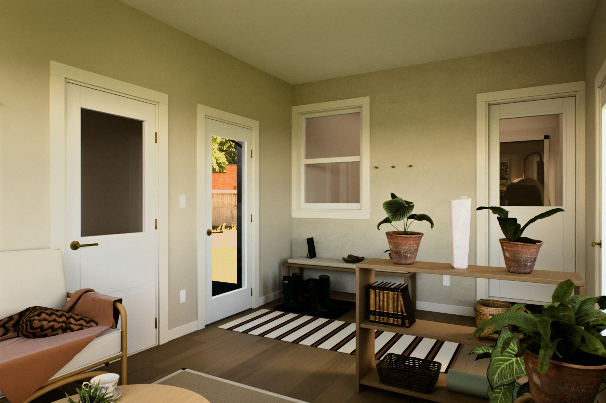
The sun is to the south, mostly behind the garage, so the room is lit by soft skylight with a little sun through the driveway door. These show the colors most accurately.
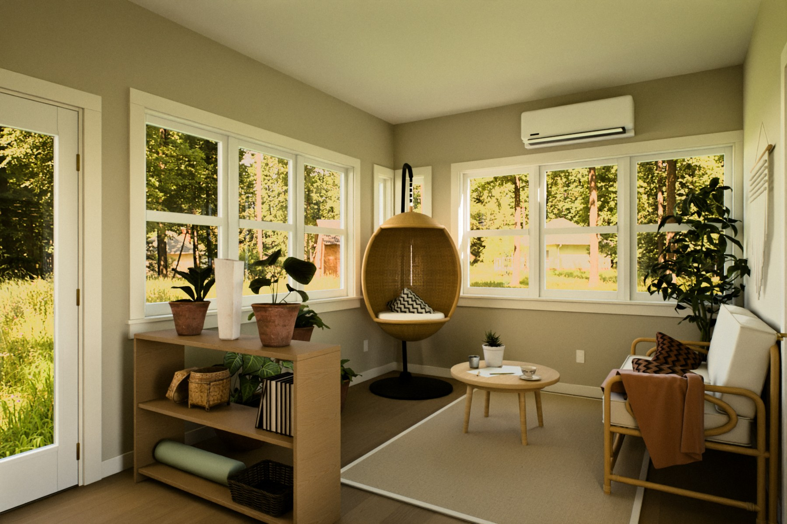
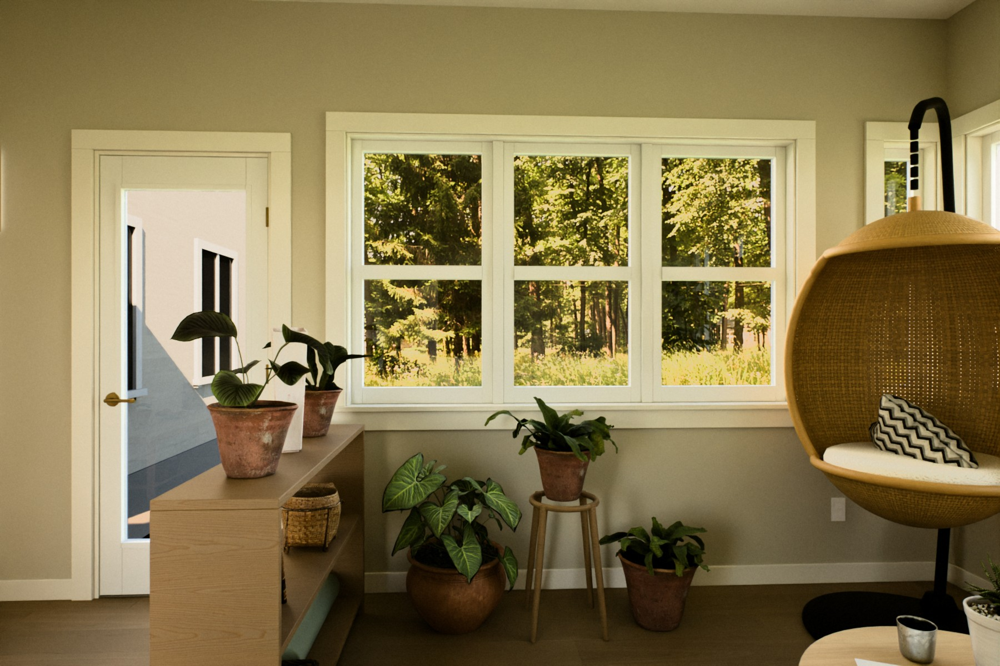
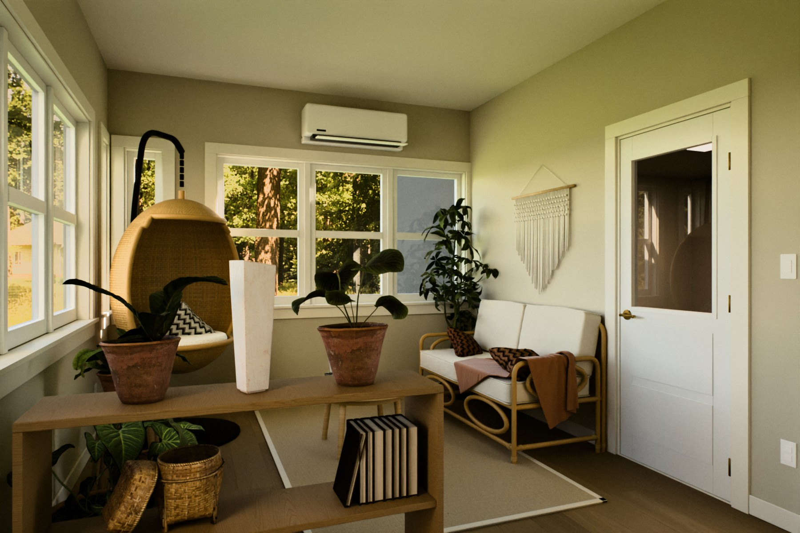
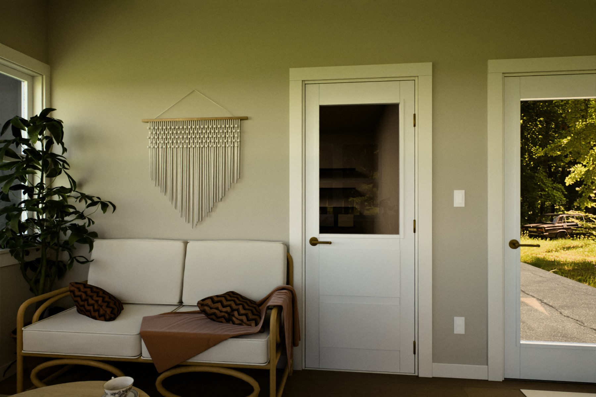
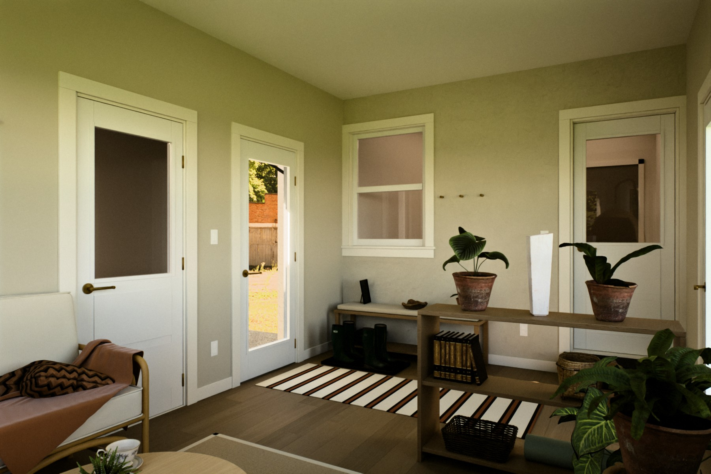
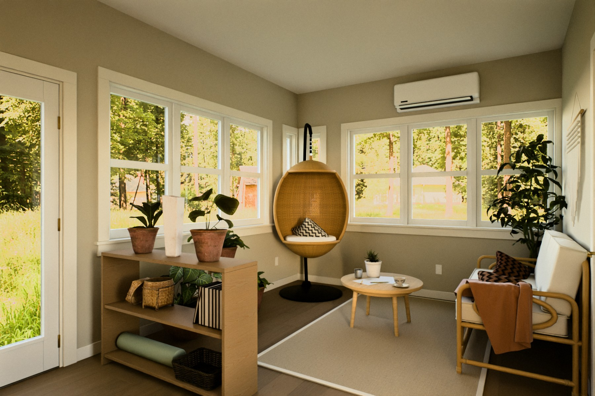
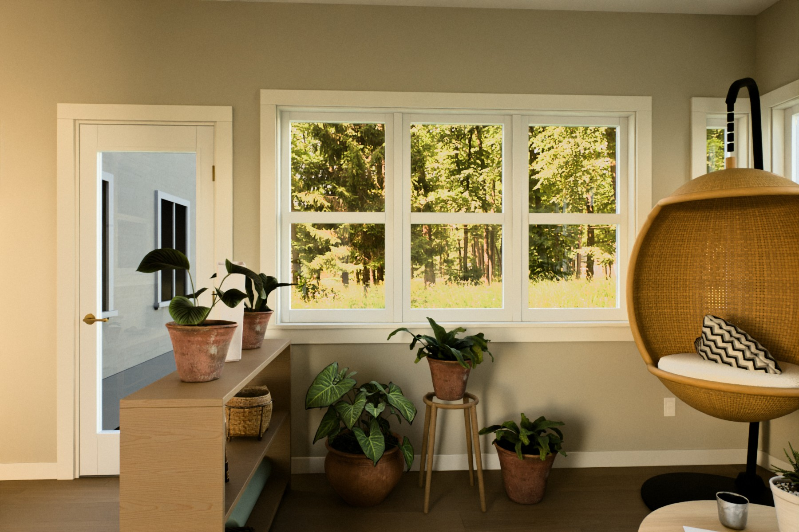
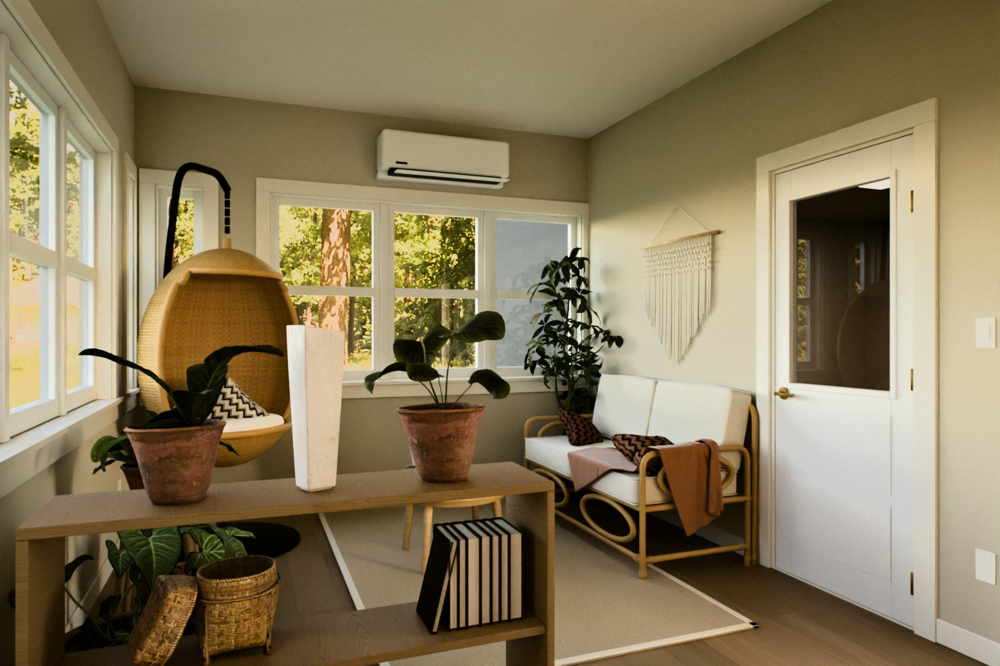
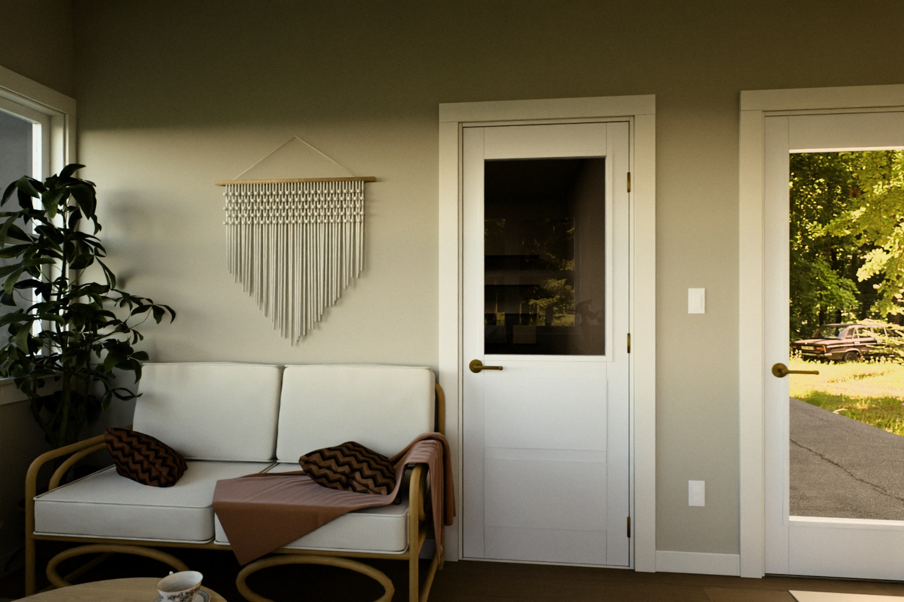
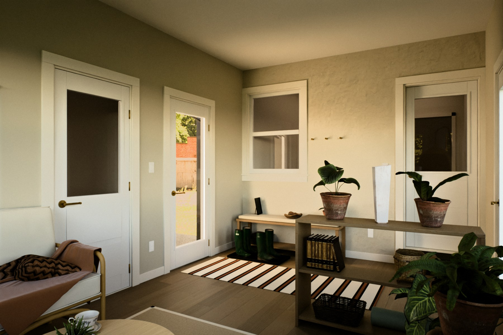